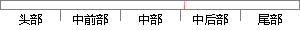

当回答的问卷体型为选择题时，该字段为空。
片段位置图

相似结果|
相似片段 1：选择题其产生的数据尺度一般有名义尺度、顺序尺度和间距尺度。5，填空题：填空题是指问卷上没有事先拟定好的答案，回答者可以自由回答，但回答的具体格式较为统一。填空题产生的数据尺度有顺序尺度和间距尺度和比例测度。
相似片段 2： P_ANSWER varchar 250 Y 回答7、在线测试选择题表在线测试选择题表主要用来记录每份测试题中选择题的信息，它包含 9 个字段，分别为选择题 ID、选择题类型、选择题内容、A 选项、B 选项、C 选项、D 选项、答案等。
相似片段 3：问题3：你在回答调查问卷中题目3时，选择题项“加入你们当中，共同解决问题"(或“鼓励你们去解决问题，并给予相应的支持”)，当时是如何考虑的?问题4：你在回答调查问卷中题目4时，选择题项“鼓励但不强迫
相似片段 4：，小部分问卷未能得到有效的回答。(二)调查问卷的编制问卷题目准备过程中我参考了很多硕博论文的问卷设计，具体的问卷题目我首先摘抄下来，从自编和摘抄的100多道题目中筛选了27道题目作为选择题，3道题作为主观
相似片段 5：为保证留学生填写问卷的有效性，保证其有耐心、准确地进行回答，问题设置包括 28 项选择题，1项填空题，1项问答题，且问答题为参考问题，可自主选择如何作答。选择题顺序为相关问题相邻，依次进行提问。为
相似片段 6：，被调查教师都能明确回答，为了保证问卷具有较高的信度，在编制中曾咨询过若干专家，根据对问卷信度和效度的检验来确定最终的题目。最终确定学生调查问卷，38道选择题，1道多项选择题和一道开放题；教师调查问卷39道
|
※ 片段修改建议 ※
近似词参考：- 回答：回覆 答复
系统自动生成语句：当回覆的问卷体型为选择题时，该字段为空。
注：本片段修改建议为系统自动生成，仅供参考。